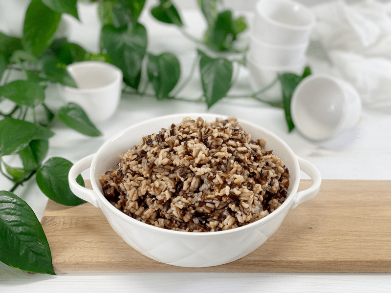
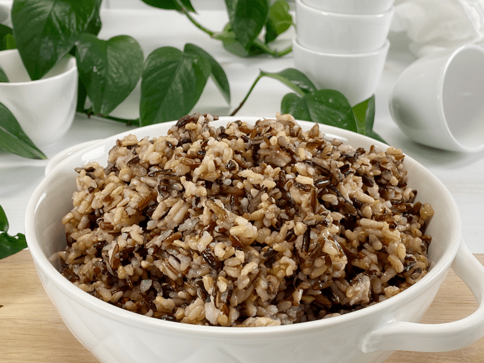
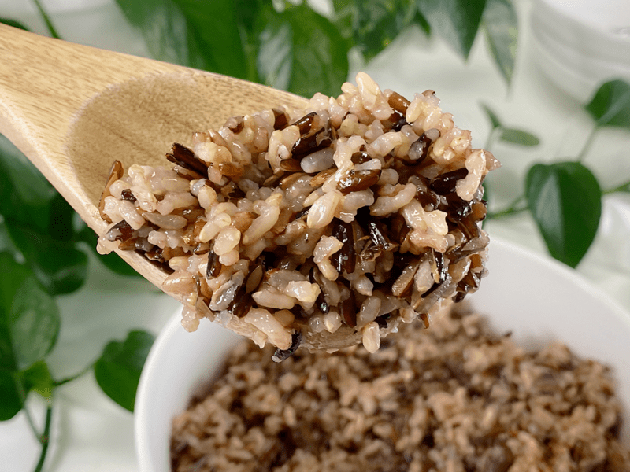

Wild Rice Blend | Instant Pot | Stove Top | Oil-Free
Bob and I enjoy rice, but it’s always a special treat when we have this wild rice blend that pops with color; it is delightful in texture and has a full-bodied flavor. Rice om general is a straightforward dish, but it’s one that can handle and welcomes many transformations. Before we can get all fancy with it, we need to know how to cook it, because perfectly tender wild rice should have a slight chew that highlights its roasted, nutty flavors.

Wild rice blend is nutrient-dense, protein-rich, a healthy starch, and is low fat. It is high in high dietary fiber and anti-oxidants, does not contain gluten, and is a good source of certain minerals and B vitamins. For all those reasons, I am always excited to incorporate it into my dishes. Every weekend, I batch cook, and rice is always one of our staples. I make enough for the week to throw into soups, sushi rolls, salads, casseroles, tacos, or whatever sticks our fancy.
It also freezes well, so that’s another time-saving tip. Once cooked, portion it out into measurements that accommodate your household, whether that be single servings or perhaps enough to feed five for dinner. It can be stored in the freezer for about three months. Just make sure that you seal it in a container/bag that allows you to get out as much air as possible. We want to protect it from freezer burn and odors can that linger in the freezer.
Ingredient Run-Down
Wild Rice Blend
- I used Lundberg Wild Blend Rice, which consists of long-grain brown rice, sweet brown rice, wild rice, Wehani red rice, and black rice. It is mostly whole grains of rice plus wild rice.
Water or Vegetable Broth
- You can increase the flavor of your dish, exponentially, just by cooking rice with vegetable broth instead of water.
- Either one works perfectly. I enjoy the extra flavor layer that the broth adds, but if money is tight or you don’t have broth in the house, use water.

Tips and Tricks
- Some wild rice mixes are parboiled, which means that they are already partially cooked. That means you would need to reduce cook time significantly. The combination I am using for this recipe is fully raw (NOT parboiled). Be sure to read the package label.
- Do not overcook, or the rice will be gummy. If that happens, don’t toss it! Freeze it in premeasured portions and enjoy it as a “rice pudding.” Growing up, my mom used to make me a special treat that included rice, milk, sugar, and cinnamon. Nowadays, to make it more healthy, I use plant-based milks and liquid stevia as my sweetener. The milk will help loosen the sticky rice and create an excellent snack or dessert. There is ALWAYS a way to salvage a recipe gone haywire.
Make Every Bite Count
- Soaking Rice: I soak any rice that I cook—in general, soaking any type of grain before cooking renders its nutrients more digestible by breaking down and neutralizing phytic acid, which is an anti-nutrient that prevents the absorption of calcium, zinc, and other minerals. Should you skip the soaking process, rinse the rice before you cook it. Some rice is coated with talc in processing. Rinsing also helps keep the grains separate as they cook.
- Kombu seaweed is my go-to ingredient that goes into every cooking pot of beans, legumes, grains, and soups. If you are ready to ramp up the nutrients in your rice pot, click (here) to learn why I use it.
- Rice is a resistant starch that comes with many health benefits. Please click (here) to read a quick post I wrote that explains what RS is.
- Making every bite count starts with healthy, quality food, but it also has to do with enjoying every bite you take too! Don’t eat foods that don’t nourish your mind, body, and soul.

I use an 8-quart Instant Pot.
 Ingredients
Ingredients
Yields 8 cups cooked rice
- 2 1/2 cups wild rice blend, soaked
- 3 3/4 cups water or vegetable broth
- Kombu seaweed (6 inches)
Preparation
Soaking Method
- Soak the rice in 4 cups of water along with 2 Tbsp raw apple cider vinegar.
- Cover with a dishtowel and leave on the counter for up to 8 hours. Drain and rinse before using.
- Use the soak water to water your garden.
Instant Pot Method
-
Add the rice, kombu, and water in the Instant Pot, giving it a quick stir. Secure the lid and make sure the steam release valve is pushed to “Sealing.”
-
Press the “Manual” button and cook at high pressure for 28 minutes.
-
When the cooking cycle is complete, allow the pressure to release naturally until the LCD screen reads LO:23, then flip the release valve to “Vent” to release any remaining pressure (there shouldn’t be any, but it’s always good to double-check).
-
Fluff the rice with a fork and remove the kombu before serving. It is edible but not very appealing by itself.
Stove Top Method
- In a medium-large pot, bring the rice and water to a boil.
- Cover with a tight-fitting lid and reduce the heat to maintain a low simmer.
- Cook for 45 minutes. Try not to lift the lid throughout the cooking process.
- When the rice is cooked (tender to the bite), leave the cover on the pan, remove it from the heat, and let stand for 5 to 10 minutes. This will allow the rice absorb any extra liquid. Then fluff the rice gently with a fork and serve.
Food Storage
When it comes to storing hot foods, we have a 2-hour window. You don’t want to put piping hot foods directly into the refrigerator. Large amounts should be divided into smaller portions and placed in shallow, covered containers for quicker cooling in a refrigerator that is set to 40 degrees (F) or below.
- Fridge: In a sealed container, it will keep for up to 7 days.
- Freezer: You can also freeze the rice in individual or meal-sized portions for up to 3 months.
© AmieSue.com